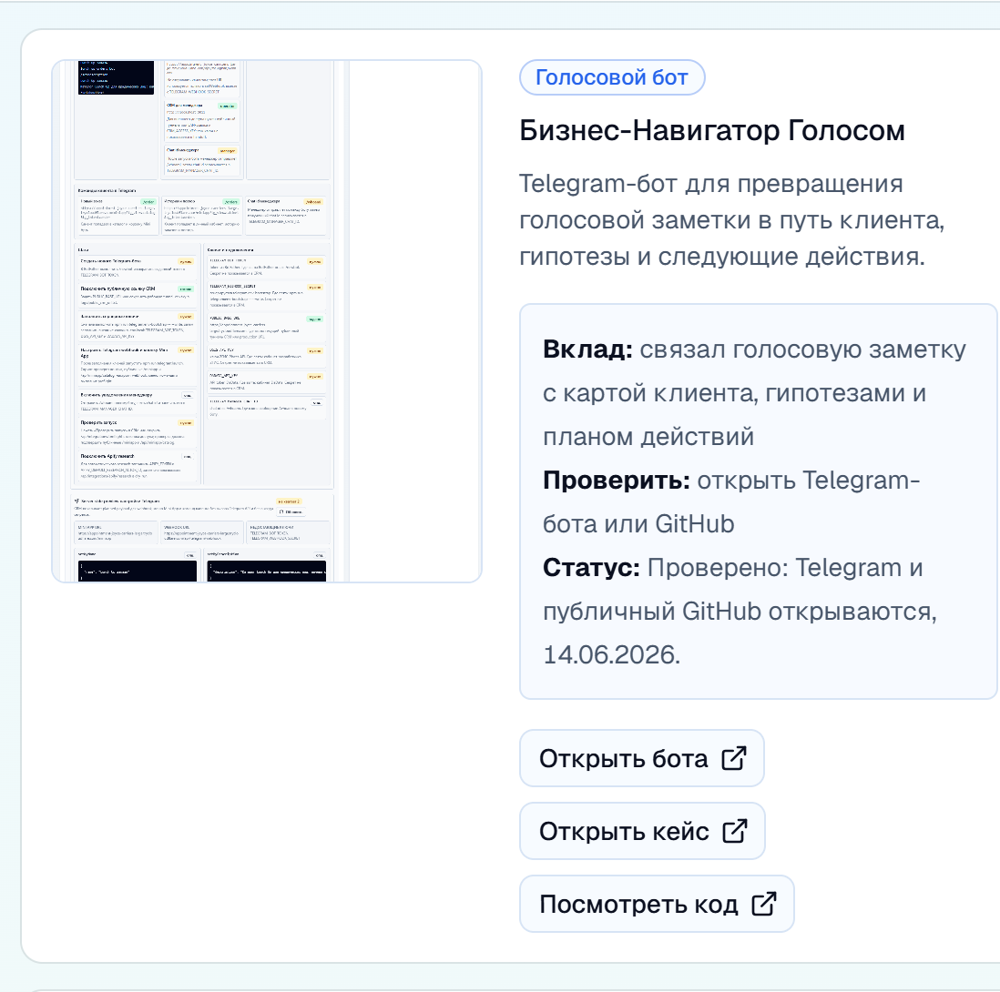

Что проверять
Public repo, reusable skill framing и подробный factory-раздел на центральной voice proof странице.
Страница продукта
Skill-подход к созданию Telegram voice agents: не один одноразовый бот, а воспроизводимая фабрика сценариев, инструкций и ассистентов.

Public repo, reusable skill framing и подробный factory-раздел на центральной voice proof странице.
Проектирование агентного skill как производственного шаблона, а не ручной разовой сборки.
Команда быстрее создает новые voice agents с одинаковой дисциплиной и ожидаемым результатом.
Когда процесс повторяется, его нужно превращать в skill. Human это сделал.
Product proof page
A reusable agent-building pattern for Telegram voice products: intake, references, validation scripts and implementation guidance for repeatable delivery.
Public repository, reusable skill framing and the factory section on the central voice proof page.
Designed the agent skill as a delivery template rather than a one-off manual bot build.
New voice agents can be created faster with a consistent intake, implementation and validation path.
Repeatable work was converted into a skill that an AI agent can follow and verify.